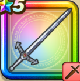

鎧の魔剣
攻略班 7.0点 / ドラゴン斬りさみだれ斬り海波斬闘魔傀儡掌ブラッディースクライド
くわしい特徴
【レベル別習得スキル】 Lv1【バトマス】すばやさ+5 Lv1ドラゴン斬り（消費MP：5）ドラゴン系に威力200%それ以外の系統には130%の斬撃ダメージを与える Lv10さみだれ斬り（消費MP：13）さみだれに剣を振りランダムな敵に威力70%の斬撃攻撃を4回する Lv15海波斬（消費MP：23）アバン流刀殺法のひとつ。敵全体に200％のヒャド属性の斬撃ダメージを与える Lv20闘魔傀儡掌（消費MP：24）敵全体に200％のドルマ属性斬撃ダメージを与え、確率で混乱させる Lv30ブラッディースクライド（消費MP：28）敵1体に400％のドルマ属性斬撃ダメージを与える Lv35物質系へのダメージ+5% Lv40怪人系へのダメージ+5% Lv45攻撃時+2%の確率で猛毒を与える Lv50攻撃力+12 【限界突破スキル】 1凸スキルの斬撃・体技ダメージ+5% 2凸スキルの斬撃・体技ダメージ+5% 3凸スキルの斬撃・体技ダメージ+5% 4凸スキルの斬撃・体技ダメージ+5%